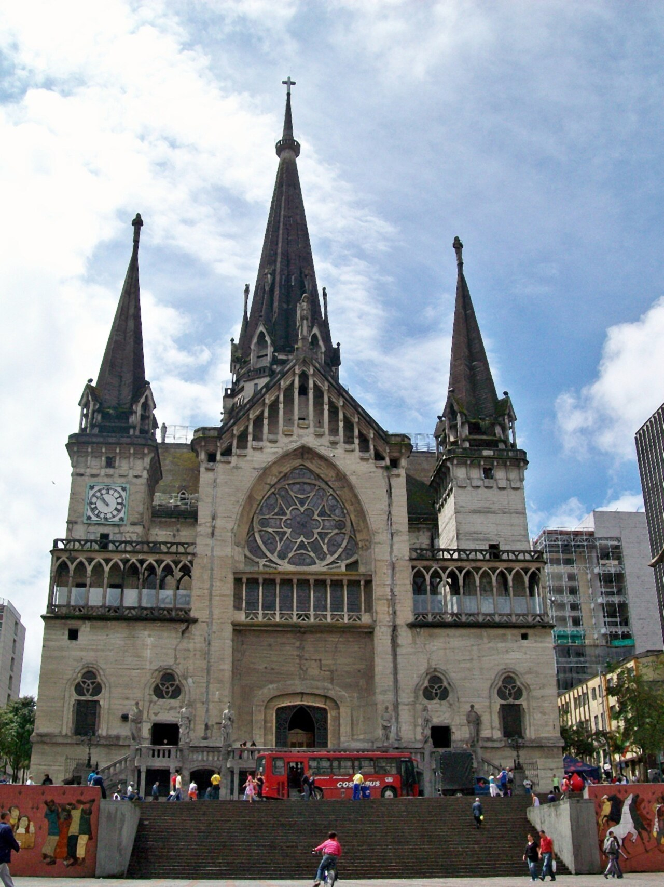

- 5.956inmuebles visitados
- $1.384.470.170asignados para la recuperación
- 104asignaciones de aportes a la recuperación
Nuestro propósito
Que cada familia vuelva a vivir tranquila en su casa
Contribuimos a la recuperación de bienes, activos, capacidades económicas o condiciones de habitabilidad de inmuebles afectados directamente por el sismo del 10 de agosto de 2026.
Reconstruir mejor, sin reactivar el riesgoResultados esperados del Plan
Recuperamos el patrimonio
Recuperar el valor patrimonial de los activos afectados o perdidos por las familias o empresas del municipio.
Fortalecemos el comercio y la actividad económica
Restablecer las actividades económicas y sociales del municipio.
Fortalecemos el ánimo
Fortalecer el ánimo, el entusiasmo y el sentido de pertenencia, vínculo e identidad de los habitantes y visitantes del municipio.
En línea
El Plan de Recuperación en cifras
Las cifras generales de la afectación, las demoliciones y los aportes asignados. Solo cifras sumadas, sin datos personales.
Asignaciones de Aportes a la Recuperación Patrimonial (ARP)
Así se entregan
Cada aporte es una familia que vuelve a empezar
Las asignaciones de los Aportes a la Recuperación Patrimonial se entregan a cada propietario, con los pasos y documentos para hacerlas efectivas.

Entregas de las asignaciones ARP en el despacho del alcalde de Manizales.
En el territorio
Los resultados, comuna por comuna
Elija la capa y toque una comuna en el mapa para ver sus cifras. Entre más oscuro el color, más alta la cifra en esa comuna.
Cargando el mapa…
Todas las comunas
ARP: aporte a la recuperación patrimonial.
El proceso
De la visita a la entrega del aporte, en cinco pasos
Cada inmueble recorre el mismo camino. La visita técnica es la que decide qué sigue.
-
 Paso 1
Paso 1Visita técnica
Los profesionales evalúan y revisan su inmueble: muros, estructura y otros elementos de la edificación. Se mide lo que se debe reparar.
-
Paso 2
Valoración de la afectación
El equipo técnico de presupuestos, con un modelo de costeo y APU para reparaciones de edificaciones, revisa y confirma el aporte a la recuperación que genera la plataforma.
-
Paso 3
Recuperación patrimonial (ARP)
Con los gerentes de zona y el equipo evaluador, se socializa con los propietarios el aporte que recibirá el inmueble.
-
 Paso 4
Paso 4Asignación del ARP
Se notifica al propietario y se asigna el valor de recuperación patrimonial, con los pasos y documentos a seguir para hacerlo efectivo.
-
 Paso 5
Paso 5Entrega del aporte
De acuerdo con la modalidad del aporte y el caso de cada inmueble, se entrega el valor económico del aporte.
Cuando un inmueble no se puede salvar
Una demolición no se decide en la visita. Pasa por estas cinco fases antes de ejecutarse.
57 ya demolidos: 50 por el municipio y 7 por particulares
Expedientes en cada fase, de los 360 abiertos.
Quiénes lo hacen posible
Un equipo en la calle, todos los días
Ingenieros y arquitectos
Visitan y evalúan cada inmueble.
Gerentes de zona
Acompañan a las familias y los comercios de cada sector.
Equipo social
Orienta a cada persona sobre qué sigue en su caso.
Equipo de presupuesto
Calcula y revisa el costo de cada reparación.

Licencias
¿Va a reparar o reconstruir? Así sabe qué trámite necesita
No toda obra necesita licencia. Depende del caso de su inmueble: si es una reparación locativa, si el daño es estructural, si el inmueble fue demolido o si es un bien de interés cultural. En la tabla de abajo encuentra el trámite y los profesionales que debe contratar.
La Ventanilla Única de la Construcción (VUC) se abre en otra pestaña y explica, en lenguaje sencillo, cómo radicar la licencia.
Qué trámite corresponde a cada caso
| Caso | Trámite | Profesionales que contrata el beneficiario |
|---|---|---|
| 1Reparaciones locativas | No requiere licencia | Ninguno para efectos de licencia |
| 2Daño estructural | Licencia de construcción, modalidad reforzamiento estructural o modificación |
|
| 3Inmueble demolido que tenía licencia o reconocimiento | Reconstrucción, sobre los planos originales y con cumplimiento de la norma sismorresistente vigente |
|
| 4Inmueble demolido sin antecedente de licencia | Obra nueva |
|
| 5Bienes de interés cultural o en su área de influencia | Autorización de la autoridad de patrimonio y luego licencia | Profesionales según el tipo de intervención |
Atención al ciudadano
¿Necesita acompañamiento o tiene una consulta?
Personas y comercios afectados por el sismo pueden escribirnos para pedir acompañamiento, hacer una consulta o presentar una petición, queja o reclamo (PQR).
Pedir acompañamiento
Para su familia o su comercio, en el proceso de recuperación.
Hacer una consulta
Sobre el plan, el aporte a la recuperación o su caso.
Peticiones, quejas y reclamos
Escríbanos y le responderemos por el mismo medio.
Sobre estos datos
De dónde salen las cifras
Última actualización: 19 de noviembre de 2026

- Las visitas, las demoliciones y los aportes asignados salen de la plataforma con la que se gestiona el Plan de Recuperación.
- Los predios afectados son una estimación según los registros de la Alcaldía de Manizales.
- Cada inmueble cuenta una vez: si tuvo varias visitas, cuenta la de mayor afectación.
- Esta página solo muestra cifras sumadas. No tiene nombres, direcciones ni números prediales (Ley 1581 de 2012).
- Fotos de las entregas: Alcaldía de Manizales. Otras fotos: Juanda097 (CC BY-SA 3.0), Sebastián Gonzalez (CC BY-SA 4.0), Wikimedia Commons; RDNE Stock y Pavel Danilyuk, Pexels.